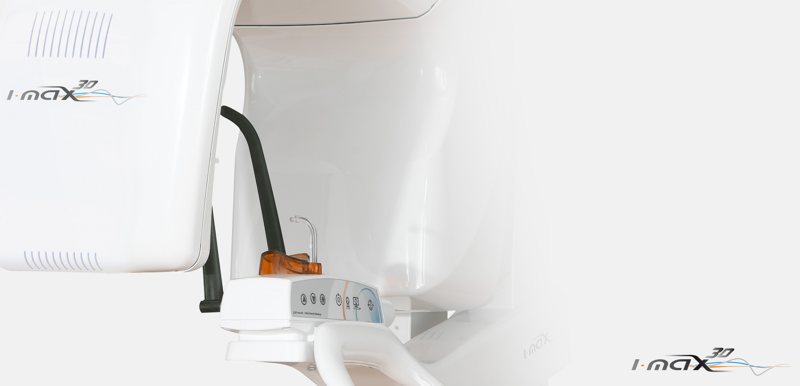

Concepto mural: cero ocupación del sueloPodrá circular libremente alrededor de I-Max 3D gracias a su pequeño volumen y su concepto de “cero ocupación del suelo”, facilitándole el correcto posicionamiento de su paciente. Diseño y eleganciaCon tan solo 66 kg, I-Max 3D es la unidad panorámica 3D/2D más ligera del mercado. Su ligero y suspendido diseño hace que I-Max sea una baza estética que dará un valor añadido a su consulta. 3D Cone Beam multi F.O.VGracias a su sistema multi F.O.V., I-Max 3D se adapta a su práctica dental: de 9×9 cm a 5×5 cm. Una excepcional calidad de imagenCon la integración de la innovación ALI-S (Automatic Layers Integration System), la unidad selecciona directa y automáticamente los mejores cortes para mostrar, sin su intervención, una imagen perfecta de alta definición. Calidad óptima por un presupuesto controladoLa unidad I-Max 3D, verdadera concentración de tecnología, ha sido diseñada para reducir al máximo los costos de fabricación, transporte e instalación. I-Max 3D le ofrece hoy en día la mejor relación inversión/rendimiento. Creación de guías quirúrgicasGracias al dúo I-Max 3D / QuickVision 3D, diseñe guías quirúrgicas listas para ser imprimidas (escáner de impresiones dentales, moldes de yeso, guías radiológicas, simulación de la ubicación de un implante…). 16 programas 3D al alcance de la mano
Con numerosos programas, I-Max 3D le permitirá realizar todos los exámenes necesarios para su práctica (Niño / Adulto):

|

Diseñado por CARVAJAL